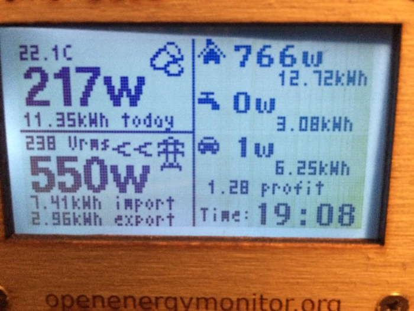

Hi
I'm trying to send data from my emonPi to an emonGLCD.
The documentation says "To send a packet a HTTP POST request needs to be sent to the nodes API of the form: request method: POST request url: /nodes/1/tx/values request body: 18.5,0.5"
Using the API Documentation link on the emoncms page "/nodes/1/tx/values" I can post values to the emonGLCD and it works beautifully. I've modified the sketch on the emonGLCD for my purposes. I assumed it would be easy to automate this in code.
However I tried to do the same thing within Python and while I get a response of "200 OK" my data doesn't get sent.
Here's my cut down code for testing:
import httplib, urllib
newdata = "17,58, 5,1569, 0, 3000, 236"
headers = {"Content-type: "text/plain"}
conn = httplib.HTTPConnection("192.168.50.88")
conn.request("POST", "/emoncms/nodes/1/tx/values", newdata)
response = conn.getresponse()
print response.status, response.reason
conn.close()
I get "200 OK" printed so the basic POST is working. I suspect I'm not putting the data in the right format.
Looking at the web page for the API I can see it's done with ajax:
$.ajax({
type: "POST",
contentType: contentType,
url: path + apiurl,
data: apivalue
});
Can somebody help me with Python?
Thanks
Brian
Re: EmonPi - Sending packets to emonGLCD
I managed to solve this. The test webpage must send a cookie with authorisation. So we need to explicitly send the appropriate apikey. When I do that all works. I've got my emonGLCDs working again with EmonPis.
In the course of this I found a more consise way of sending POSTs so the new Python code is below:
import requests
newdata = "17,58, 5,1569, 0, 3000, 236"
r=requests.post('http://192.168.50.88/emoncms/nodes/1/tx/values?apikey=xxxxxxxx',data=newdata,headers={'content-type': 'text/plain'})
Re: EmonPi - Sending packets to emonGLCD
Brian - I just finished building the emonglcd. So my next step is to try and send data from the emonPi to the emonglcd.
With your example above, I am guessing your emonPi is IP addr 192.168.50.88? And is node 1 is the emonglcd? What is the newdata of "17,58, 5,1569, 0, 3000, 236" represent? Would you be willing to share more of your code?
Tnx! Jon
Re: EmonPi - Sending packets to emonGLCD
Hi Jon
No problem. Yes the ip of my emonPi is 192.168.50.88 & is node 5. The EmonGLCD is actually on node 20. Node 1 is just what the instructions told me to use. The arduino code in the emonGLCD needs to look out for node 5.
newdata is my set of values I'm sending. In this case the first 2 values are the hour & minutes of the time ie 17:58. The next values are my electric car kW, solar PV kW, immersion heater kW, House kW and then the voltage of the mains.
I actually have 2 emonPis. One is out of range of the emonGLCD, in my garage, but is on the ethernet network. So I use sockets to send its data (electric car charging and solar PV) between the 2 emonPis.
The code for the emonPi in the carage is in senddata.py. This is run every 5 seconds with the following entries in crontab:
*/1 * * * * /home/pi/senddata.py
*/1 * * * * (sleep 5 ; /home/pi/senddata.py)
*/1 * * * * (sleep 10 ; /home/pi/senddata.py)
*/1 * * * * (sleep 15 ; /home/pi/senddata.py)
*/1 * * * * (sleep 20 ; /home/pi/senddata.py)
*/1 * * * * (sleep 25 ; /home/pi/senddata.py)
*/1 * * * * (sleep 30 ; /home/pi/senddata.py)
*/1 * * * * (sleep 35 ; /home/pi/senddata.py)
*/1 * * * * (sleep 40 ; /home/pi/senddata.py)
*/1 * * * * (sleep 45 ; /home/pi/senddata.py)
*/1 * * * * (sleep 50 ; /home/pi/senddata.py)
*/1 * * * * (sleep 55 ; /home/pi/senddata.py)
A couple of points about this program. I get the data form this file /var/log/emonhub/emonhub.log There may be a better way of getting the data, if you find it let me know. Also if the communication with the other emonPi fails it performs a reboot.
The program on the other emonPi which is in my house (ip 192.168.50.88) collects the data from the garage emonPi, adds its own readings (immersion & house power) and sends everything to the emonGLCD. This is sockserver.py
I've also included my code for the emonGLCD which displays all this info.
Brian
Re: EmonPi - Sending packets to emonGLCD
Hi Brian,
Like you, I ran into the need to run a python script every 5 seconds. I used the cron sleep trick for a few weeks, but kept thinking "I'm already running Python, there's got to be a way to run the job every 5 secs from Python" Searching turned up Advanced Python Scheduler. It uses a syntax similar to cron, and has resolution down to one second.
Here's all it takes to make it work:
----------------------------------------------------------------from apscheduler.scheduler import Scheduler from time import sleep # Start the scheduler
sched = Scheduler()
sched.start() def read_meter():
#meter reading code def send_to_pvo():
#send to pvo code def wrt_data_daily():
#daily code def wrt_monthly_separator():
#monthly code def main(): job1 = sched.add_cron_job(read_meter, second='*/5')
job2 = sched.add_cron_job(send_to_pvo, minute='*/5', second='2')
job3 = sched.add_cron_job(wrt_data_daily, hour='23', minute='59', second='52')
job4 = sched.add_cron_job(wrt_monthly_separator, day='1', hour='0', minute='0', second='1') # At the end of your python script you run a loop, like this: while True:
sleep(2) if __name__ == "__main__":
main()
-----------------------------------------------------------------
The "job stack" is an excerpt from my script:
Job 1 reads my modbus meter every 5 seconds.
Job 2 sends the data to PVOutput.org every 5 minutes (plus 2 secs to avoid collision w/Job 1)
Job 3 writes data to a log daily at 23:59:52
Job 4 writes text to the daily log file on the 1st of every month
This page details the cron-style scheduling syntax:
http://apscheduler.readthedocs.org/en/v2.1.2/cronschedule.html
I've attached v2.1.2 for your perusal.
Version 3 is available, but I stayed with v2 as v3 is quite a bit more complicated, and I wanted as simple a solution as I could get. I installed it via pip, but the docs say easy-install should work too.
Regards,
Bill
Re: EmonPi - Sending packets to emonGLCD
I tried to edit my post to delete that image I had as it was appearing upside down. The whole post has disappeared but perhaps it's gone for moderation. In any case here's the corrected photo.

Edit - corrected inverted photo - BT
Re: EmonPi - Sending packets to emonGLCD
Brian - Thank you for the info, the image and the code. I’ve been reading through the code and it definitely answered some of my questions. And it generated a few more questions!
It looks like:
- SolarPVBHCar.ino runs on the emonGLCD (with icons.ino & templates.ino)
- senddata.py runs on the garage emonPi (as in your note)
- sockserver.py is responsible for sending data to the emonglcd via the line:
requests.post('http://192.168.50.88/emoncms/nodes/1/tx/values?apikey=xxxxxxxxxxxxx',data=newdata,headers={"content-type": "text/plain”})
Does sockserver.py run on the garage emonPi? Or the other emonPi? I’m not familiar with sockets or how this .PY works, but I will figure it out.
As far as a location to trade data, you could always create your own file (log file?) in the /var/log directory. Just remember that new trade file will be disappear if/when the emonPi resets (senddata.py line 23). There is probably a better way that someone else could suggest.
Jon
Re: EmonPi - Sending packets to emonGLCD
Brian - In the emonhub.conf area of the emonPi, does the emonGLCD need to be configured as your Node 20? Like something similar to this??
Jon
Re: EmonPi - Sending packets to emonGLCD
Jon
sockserver.py runs on the emonPi in the house. It's receiving the solar & car charging info and then broadcasting it to the emonGLCD.
Brian
Re: EmonPi - Sending packets to emonGLCD
Jon
I didn't need to configure the emonGLCDs (I actually have 2 of them Node 20 & Node 21) in EmonHub. When I did I wasn't able to collect the temperature data they send out. I found that if I just commented them out they popped up in the nodes anyway with their temperature readings (needing to be divided by 100).
Brian